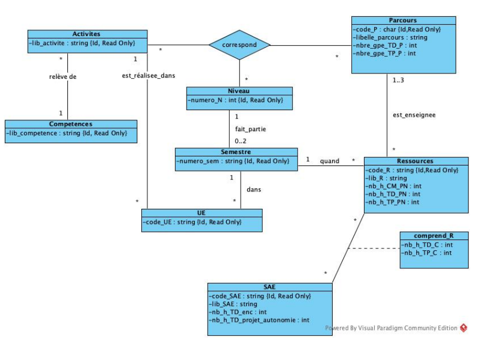

Pour la SAE 1.04, nous devions créer un schéma SQL à partir d'un texte. Cette SAE est répartie en 2 parties, la première est la création du diagramme UML à partir du texte. La seconde est l'utilisation du diagramme UML pour faire la création du schéma.